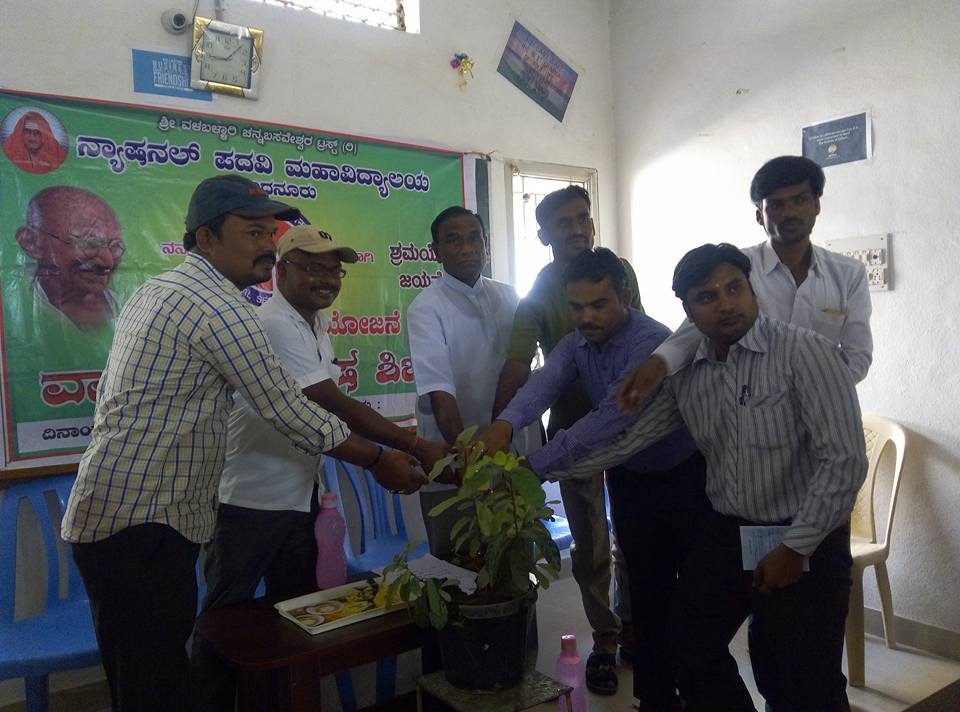
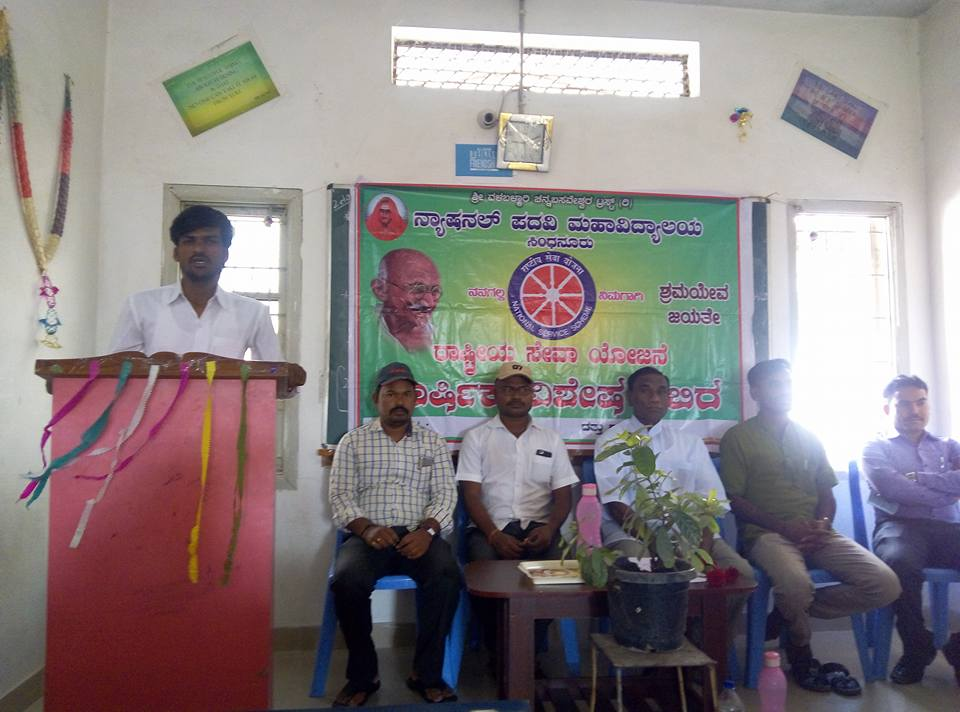
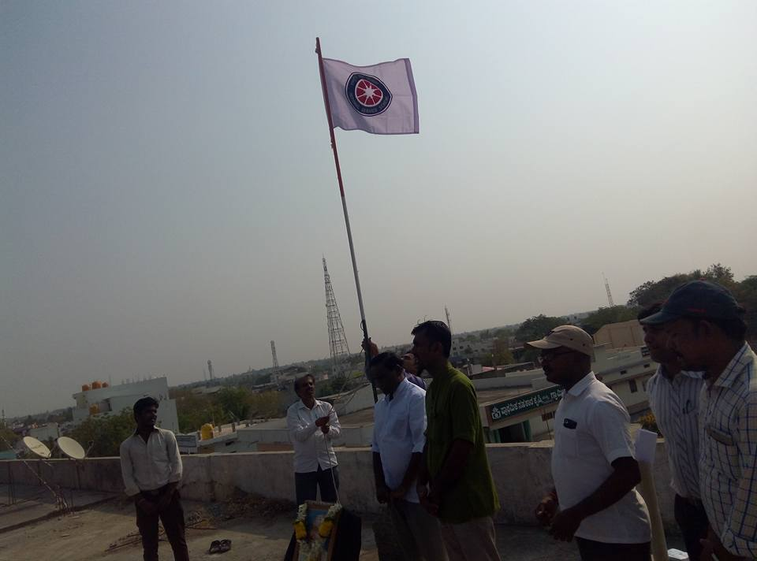

NSS - National Service Scheme
The National Service Scheme (NSS) at National College Sindhanur encourages students to participate in community service and nation-building activities, fostering a sense of social responsibility and leadership.
About NSS
NSS is a government-sponsored public service program under the Ministry of Youth Affairs & Sports, Government of India. The primary objective is to develop the personality and character of student youth through voluntary community service. NSS volunteers work to ensure that everyone who is needy gets help to enhance their standard of living and lead a life of dignity.
- Promotes social responsibility, leadership, and teamwork among students.
- Organizes blood donation camps, cleanliness drives, awareness rallies, and rural development programs.
- Encourages participation in national integration camps and adventure programs.
NSS Activities Gallery


